2022 Higher Human Biology - Paper 1 questions
Source: Scottish Qualifications Authority (SQA) / Qualifications Scotland. This is a StemInteract HTML companion, not an official HTML edition. Extracted text is supplied alongside unaltered page images; use the images or original PDF for table layout, diagrams and symbols.
Jump to a question
PDF page 1
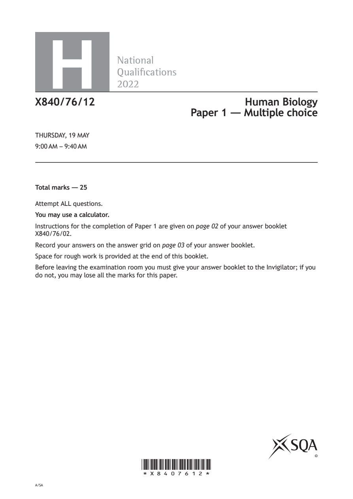
Selectable page text
H
National
Qualications
2022
X840/76/12 Human Biology
Paper 1 — Multiple choice
THURSDAY, 19 MAY
9:00 AM – 9:40 AM
Total marks — 25
Attempt ALL questions.
You may use a calculator.
Instructions for the completion of Paper 1 are given on page 02 of your answer booklet
X840/76/02.
Record your answers on the answer grid on page 03 of your answer booklet.
Space for rough work is provided at the end of this booklet.
Before leaving the examination room you must give your answer booklet to the Invigilator; if you
do not, you may lose all the marks for this paper.
©
*X8407612*
A/SAPDF page 2
Question 1Question 2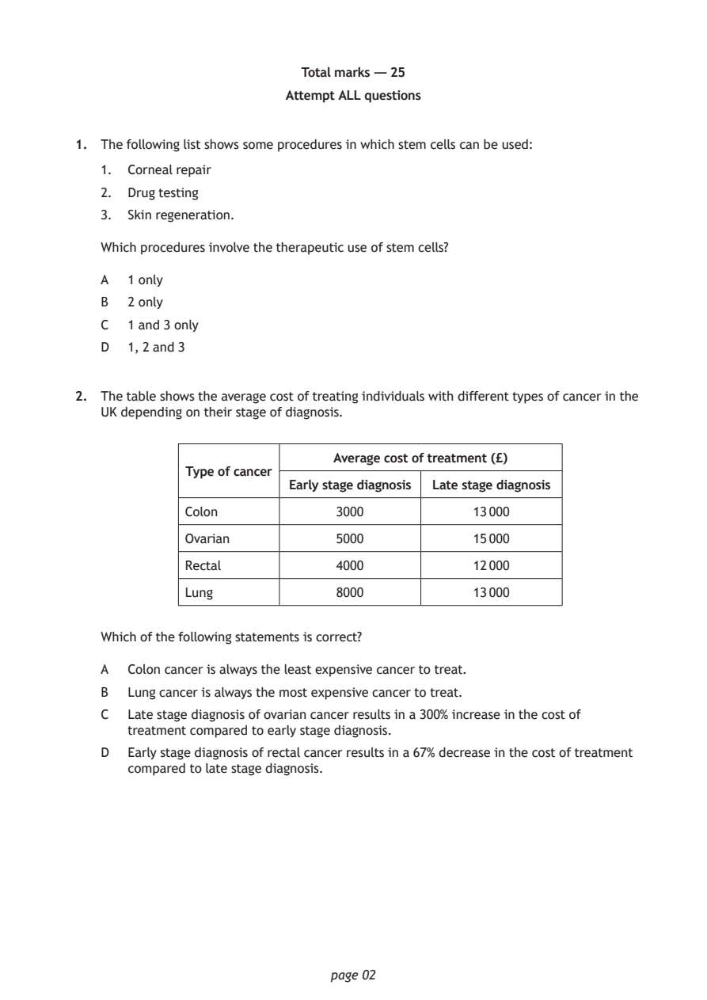
Selectable page text
Total marks — 25
Attempt ALL questions
1. The following list shows some procedures in which stem cells can be used:
1. Corneal repair
2. Drug testing
3. Skin regeneration.
Which procedures involve the therapeutic use of stem cells?
A 1 only
B 2 only
C 1 and 3 only
D 1, 2 and 3
2. The table shows the average cost of treating individuals with different types of cancer in the
UK depending on their stage of diagnosis.
Average cost of treatment (£)
Type of cancer
Early stage diagnosis Late stage diagnosis
Colon 3000 13 000
Ovarian 5000 15 000
Rectal 4000 12 000
Lung 8000 13 000
Which of the following statements is correct?
A Colon cancer is always the least expensive cancer to treat.
B Lung cancer is always the most expensive cancer to treat.
C Late stage diagnosis of ovarian cancer results in a 300% increase in the cost of
treatment compared to early stage diagnosis.
D Early stage diagnosis of rectal cancer results in a 67% decrease in the cost of treatment
compared to late stage diagnosis.
page 02PDF page 3
Question 3Question 4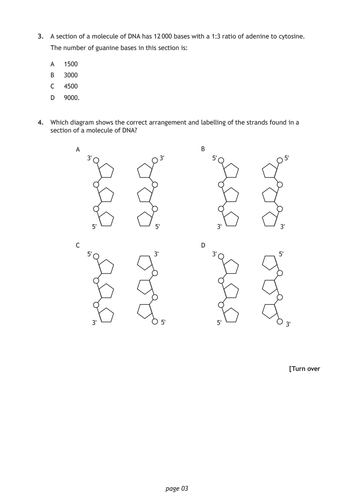
Selectable page text
3. A section of a molecule of DNA has 12 000 bases with a 1:3 ratio of adenine to cytosine.
The number of guanine bases in this section is:
A 1500
B 3000
C 4500
D 9000.
4. Which diagram shows the correct arrangement and labelling of the strands found in a
section of a molecule of DNA?
A B
3' 3' 5' 5'
5' 5' 3' 3'
C D
5' 3' 3' 5'
3' 5' 5' 3'
[Turn over
page 03PDF page 4
Question 5Question 6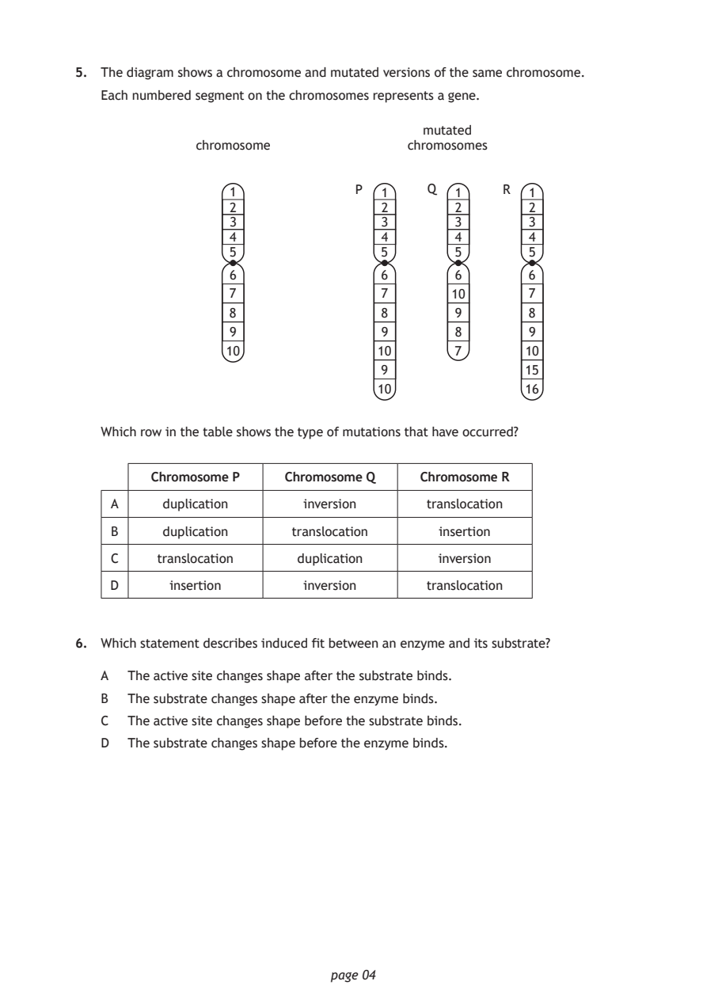
Selectable page text
5. The diagram shows a chromosome and mutated versions of the same chromosome.
Each numbered segment on the chromosomes represents a gene.
mutated
chromosome chromosomes
1 P 1 Q 1 R 1
2 2 2 2
3 3 3 3
4 4 4 4
5 5 5 5
6 6 6 6
7 7 10 7
8 8 9 8
9 9 8 9
10 10 7 10
9 15
10 16
Which row in the table shows the type of mutations that have occurred?
Chromosome P Chromosome Q Chromosome R
A duplication inversion translocation
B duplication translocation insertion
C translocation duplication inversion
D insertion inversion translocation
6. Which statement describes induced fit between an enzyme and its substrate?
A The active site changes shape after the substrate binds.
B The substrate changes shape after the enzyme binds.
C The active site changes shape before the substrate binds.
D The substrate changes shape before the enzyme binds.
page 04PDF page 5
Question 7Question 8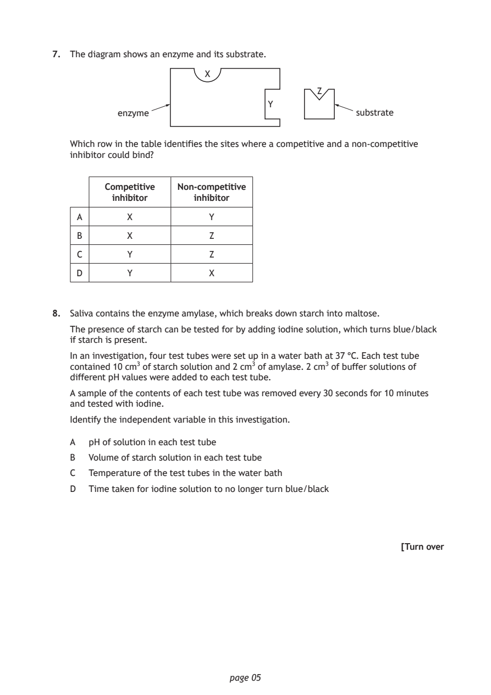
Selectable page text
7. The diagram shows an enzyme and its substrate.
X
Z
Y
enzyme substrate
Which row in the table identifies the sites where a competitive and a non-competitive
inhibitor could bind?
Competitive Non-competitive
inhibitor inhibitor
A X Y
B X Z
C Y Z
D Y X
8. Saliva contains the enzyme amylase, which breaks down starch into maltose.
The presence of starch can be tested for by adding iodine solution, which turns blue/black
if starch is present.
In an investigation, four test tubes were set up in a water bath at 37 °C. Each test tube
contained 10 cm3 of starch solution and 2 cm3 of amylase. 2 cm3 of buffer solutions of
different pH values were added to each test tube.
A sample of the contents of each test tube was removed every 30 seconds for 10 minutes
and tested with iodine.
Identify the independent variable in this investigation.
A pH of solution in each test tube
B Volume of starch solution in each test tube
C Temperature of the test tubes in the water bath
D Time taken for iodine solution to no longer turn blue/black
[Turn over
page 05PDF page 6
Question 9Question 10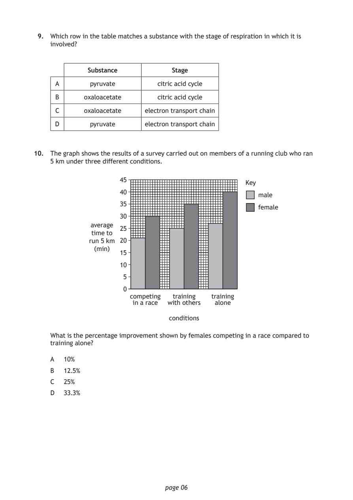
Selectable page text
9. Which row in the table matches a substance with the stage of respiration in which it is
involved?
Substance Stage
A pyruvate citric acid cycle
B oxaloacetate citric acid cycle
C oxaloacetate electron transport chain
D pyruvate electron transport chain
10. The graph shows the results of a survey carried out on members of a running club who ran
5 km under three different conditions.
45
Key
40
male
35
female
30
average
25
time to
run 5 km 20
(min)
15
10
5
0
competing training training
in a race with others alone
conditions
What is the percentage improvement shown by females competing in a race compared to
training alone?
A 10%
B 12.5%
C 25%
D 33.3%
page 06PDF page 7
Question 11Question 12Question 13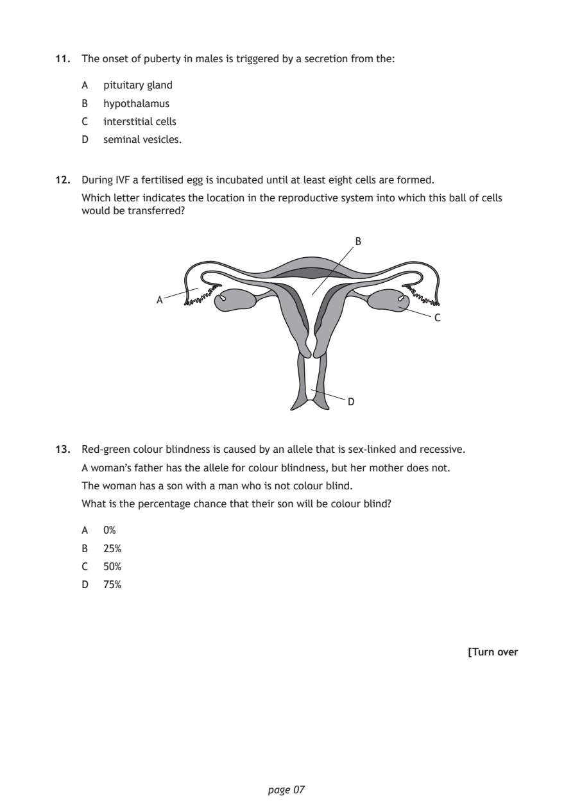
Selectable page text
11. The onset of puberty in males is triggered by a secretion from the:
A pituitary gland
B hypothalamus
C interstitial cells
D seminal vesicles.
12. During IVF a fertilised egg is incubated until at least eight cells are formed.
Which letter indicates the location in the reproductive system into which this ball of cells
would be transferred?
B
A
C
D
13. Red-green colour blindness is caused by an allele that is sex-linked and recessive.
A woman’s father has the allele for colour blindness, but her mother does not.
The woman has a son with a man who is not colour blind.
What is the percentage chance that their son will be colour blind?
A 0%
B 25%
C 50%
D 75%
[Turn over
page 07PDF page 8
Question 14Question 15Question 16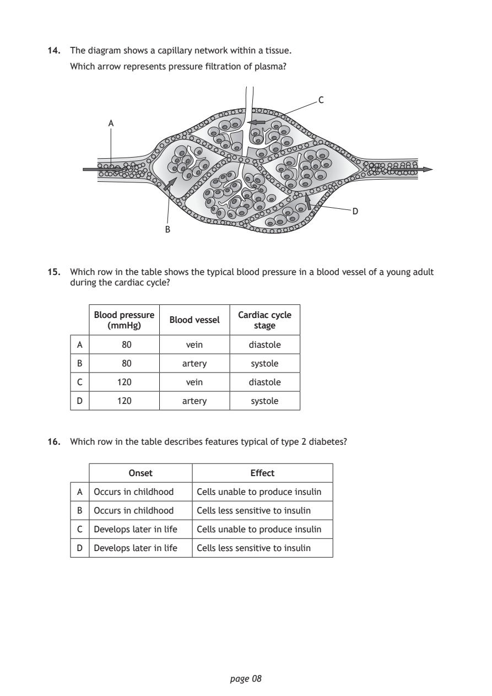
Selectable page text
14. The diagram shows a capillary network within a tissue.
Which arrow represents pressure filtration of plasma?
C
A
D
B
15. Which row in the table shows the typical blood pressure in a blood vessel of a young adult
during the cardiac cycle?
Blood pressure Cardiac cycle
Blood vessel
(mmHg) stage
A 80 vein diastole
B 80 artery systole
C 120 vein diastole
D 120 artery systole
16. Which row in the table describes features typical of type 2 diabetes?
Onset Effect
A Occurs in childhood Cells unable to produce insulin
B Occurs in childhood Cells less sensitive to insulin
C Develops later in life Cells unable to produce insulin
D Develops later in life Cells less sensitive to insulin
page 08PDF page 9
Question 17Question 18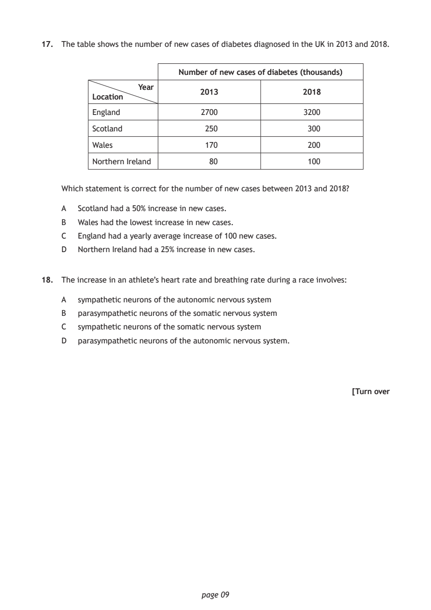
Selectable page text
17. The table shows the number of new cases of diabetes diagnosed in the UK in 2013 and 2018.
Number of new cases of diabetes (thousands)
Year
2013 2018
Location
England 2700 3200
Scotland 250 300
Wales 170 200
Northern Ireland 80 100
Which statement is correct for the number of new cases between 2013 and 2018?
A Scotland had a 50% increase in new cases.
B Wales had the lowest increase in new cases.
C England had a yearly average increase of 100 new cases.
D Northern Ireland had a 25% increase in new cases.
18. The increase in an athlete’s heart rate and breathing rate during a race involves:
A sympathetic neurons of the autonomic nervous system
B parasympathetic neurons of the somatic nervous system
C sympathetic neurons of the somatic nervous system
D parasympathetic neurons of the autonomic nervous system.
[Turn over
page 09PDF page 10
Question 19Question 20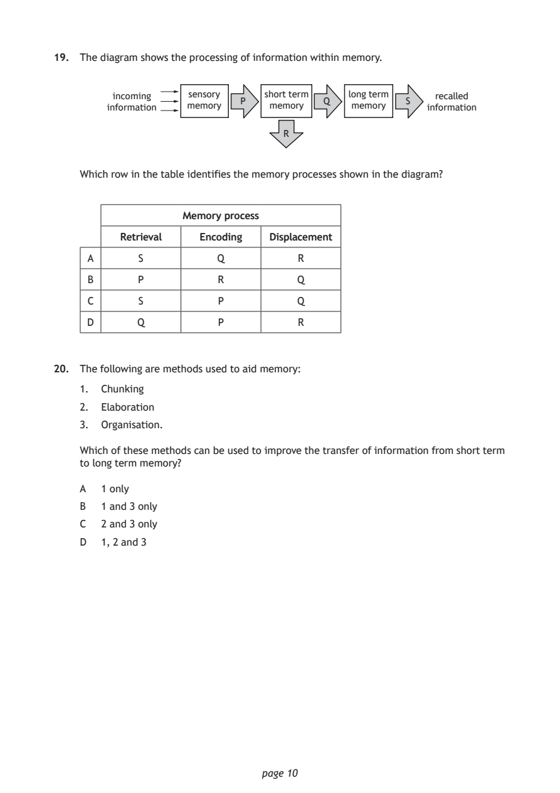
Selectable page text
19. The diagram shows the processing of information within memory.
incoming sensory short term long term recalled
P Q S
information memory memory memory information
R
Which row in the table identifies the memory processes shown in the diagram?
Memory process
Retrieval Encoding Displacement
A S Q R
B P R Q
C S P Q
D Q P R
20. The following are methods used to aid memory:
1. Chunking
2. Elaboration
3. Organisation.
Which of these methods can be used to improve the transfer of information from short term
to long term memory?
A 1 only
B 1 and 3 only
C 2 and 3 only
D 1, 2 and 3
page 10PDF page 11
Question 21Question 22Question 23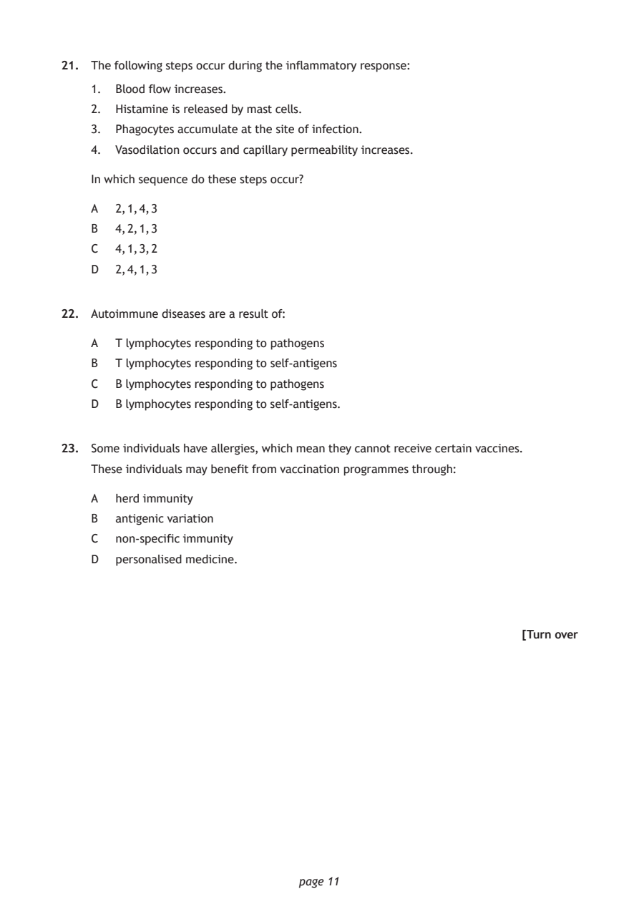
Selectable page text
21. The following steps occur during the inflammatory response:
1. Blood flow increases.
2. Histamine is released by mast cells.
3. Phagocytes accumulate at the site of infection.
4. Vasodilation occurs and capillary permeability increases.
In which sequence do these steps occur?
A 2, 1, 4, 3
B 4, 2, 1, 3
C 4, 1, 3, 2
D 2, 4, 1, 3
22. Autoimmune diseases are a result of:
A T lymphocytes responding to pathogens
B T lymphocytes responding to self-antigens
C B lymphocytes responding to pathogens
D B lymphocytes responding to self-antigens.
23. Some individuals have allergies, which mean they cannot receive certain vaccines.
These individuals may benefit from vaccination programmes through:
A herd immunity
B antigenic variation
C non-specific immunity
D personalised medicine.
[Turn over
page 11PDF page 12
Question 24Question 25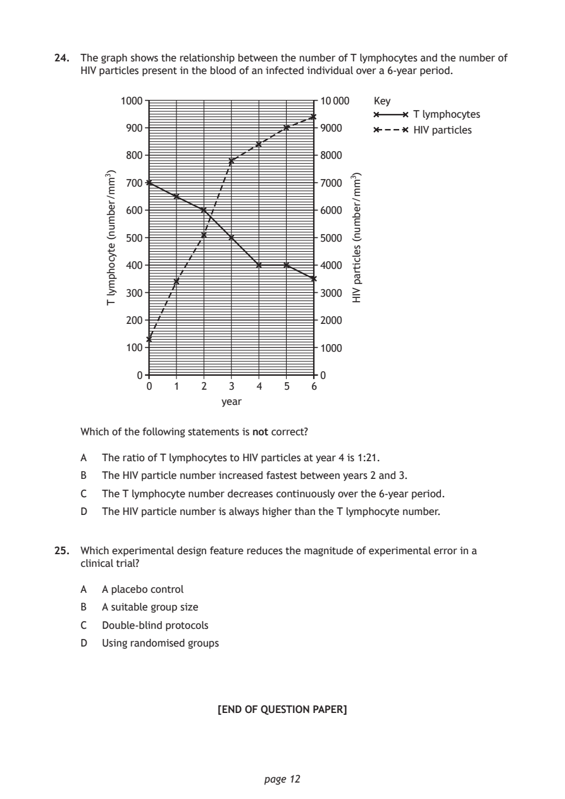
Selectable page text
24. The graph shows the relationship between the number of T lymphocytes and the number of
HIV particles present in the blood of an infected individual over a 6-year period.
Key
T lymphocytes
HIV particles
0 1 2 3 4 5 6
year
page 12
)3mm/rebmun(
etycohpmyl
T
)3mm/rebmun(
selcitrap
VIH
1000 10 000
900 9000
800 8000
700 7000
600 6000
500 5000
400 4000
300 3000
200 2000
100 1000
0 0
Which of the following statements is not correct?
A The ratio of T lymphocytes to HIV particles at year 4 is 1:21.
B The HIV particle number increased fastest between years 2 and 3.
C The T lymphocyte number decreases continuously over the 6-year period.
D The HIV particle number is always higher than the T lymphocyte number.
25. Which experimental design feature reduces the magnitude of experimental error in a
clinical trial?
A A placebo control
B A suitable group size
C Double-blind protocols
D Using randomised groups
[END OF QUESTION PAPER]PDF page 13

Selectable page text
SPACE FOR ROUGH WORK
page 13PDF page 14

Selectable page text
SPACE FOR ROUGH WORK
page 14PDF page 15

Selectable page text
[BLANK PAGE]
DO NOT WRITE ON THIS PAGE
page 15PDF page 16
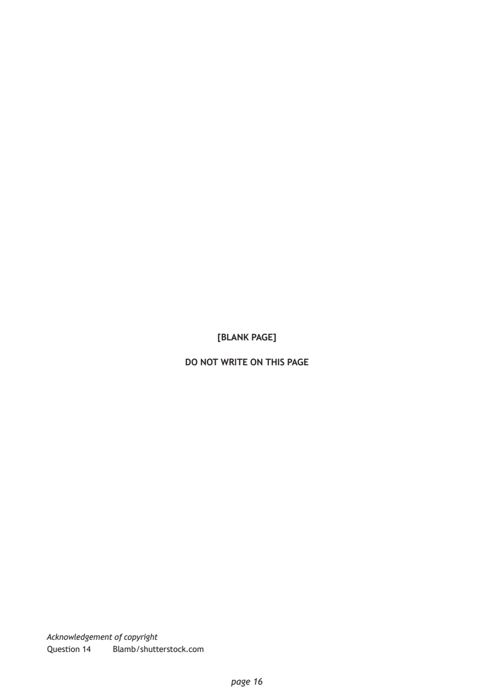
Selectable page text
[BLANK PAGE]
DO NOT WRITE ON THIS PAGE
Acknowledgement of copyright
Question 14 Blamb/shutterstock.com
page 16